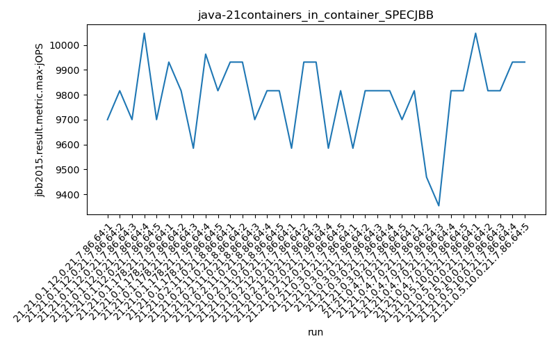
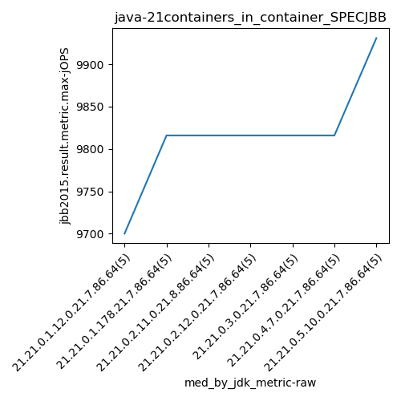
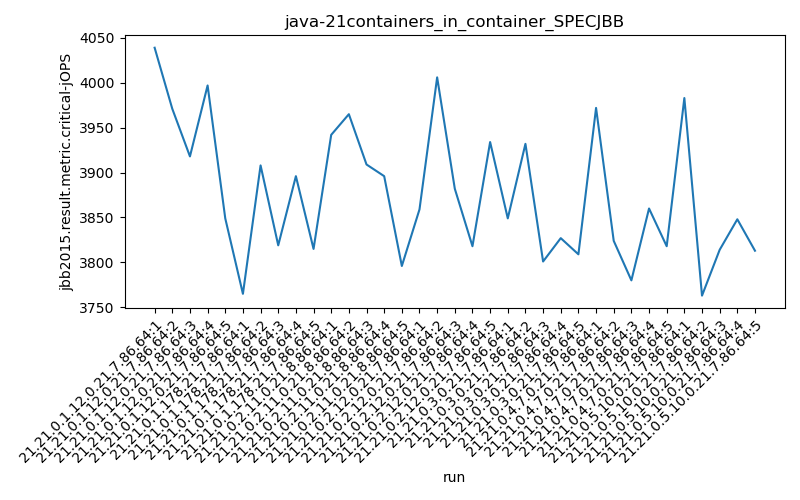
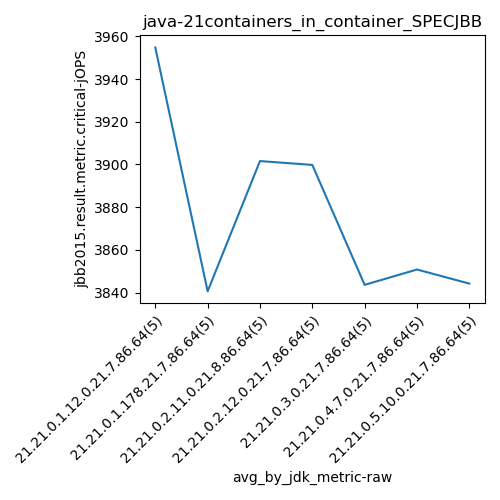
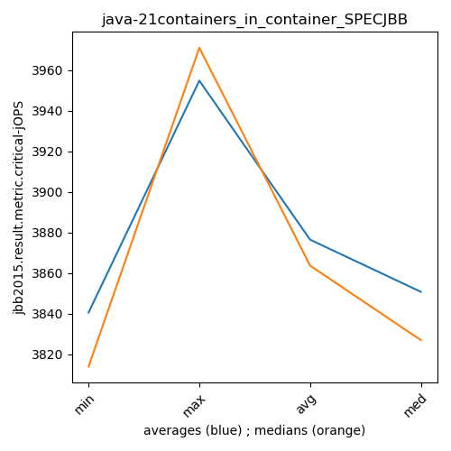

java-21 SPECJBB
Context at bottom
/home/jvanek/git/benchmarks-in-nested-virtualisation-toolchain/final_results/containers_in_container_results/containers_in_container_DACAPO
java-21
SPECJBB
/home/jvanek/git/benchmarks-in-nested-virtualisation-toolchain/final_results/containers_in_container_results/containers_in_container_JMH
java-21
SPECJBB
/home/jvanek/git/benchmarks-in-nested-virtualisation-toolchain/final_results/containers_in_container_results/containers_in_container_SPECJBB
java-21
SPECJBB
containers_in_container_SPECJBB
- containers_in_container_SPECJBB - max-jops
- containers_in_container_SPECJBB - critical jops
containers_in_container_SPECJBB - max-jops
Expected number of java-21 JDKs: 7
1st avgmed_alljdks_metric:
/home/jvanek/git/benchmarks-in-nested-virtualisation-toolchain/final_results/result_processing.py /home/jvanek/git/benchmarks-in-nested-virtualisation-toolchain/final_results/containers_in_container_results/containers_in_container_SPECJBB jbb2015.result.metric.max-jOPS False
values: [9700, 9816, 9700, 10047, 9700, 9931, 9816, 9585, 9963, 9816, 9931, 9931, 9700, 9816, 9816, 9585, 9931, 9931, 9585, 9816, 9585, 9816, 9816, 9816, 9700, 9816, 9469, 9354, 9816, 9816, 10047, 9816, 9816, 9931, 9931]

Expected number of iterations: 5
final number of values: 35 out of 35
Pass rate: 100.0%
values: (9354, 10047, 9790.314285714287, 9816)

** accuracy from all jdks and runs
more is better
MIN: 9354
MAX: 10047
AVG: 9790.314285714287
MED: 9816
Relative differences 1:
MIN-MAX: 7.0 %
MIN-AVG: 4.0 %
MIN-MED: 5.0 %
MAX-MIN: -7.0 %
MAX-AVG: -3.0 %
MAX-MED: -2.0 %
AVG-MED: 0.0 %
stored to java-21.properties. sort | uniq that!
2nd avgmed_by_jdk_metric:
values: [9792.6, 9822.2, 9838.8, 9769.6, 9746.6, 9654.2, 9908.2]

values: [9700, 9816, 9816, 9816, 9816, 9816, 9931]

values: (9654.2, 9908.2, 9790.314285714285, 9792.6)
values: (9700, 9931, 9815.857142857143, 9816)

** accuracy from all jdks where runs were avged
more is better
MIN: 9654.2
MAX: 9908.2
AVG: 9790.314285714285
MED: 9792.6
Relative differences 1:
MIN-MAX: 3.0 %
MIN-AVG: 1.0 %
MIN-MED: 1.0 %
MAX-MIN: -3.0 %
MAX-AVG: -1.0 %
MAX-MED: -1.0 %
AVG-MED: 0.0 %
stored to java-21.properties. sort | uniq that!
** accuracy from all jdks where runs were medianed
more is better
MIN: 9700
MAX: 9931
AVG: 9815.857142857143
MED: 9816
Relative differences 1:
MIN-MAX: 2.0 %
MIN-AVG: 1.0 %
MIN-MED: 1.0 %
MAX-MIN: -2.0 %
MAX-AVG: -1.0 %
MAX-MED: -1.0 %
AVG-MED: 0.0 %
stored to java-21.properties. sort | uniq that!
containers_in_container_SPECJBB - critical jops
Expected number of java-21 JDKs: 7
1st avgmed_alljdks_metric:
/home/jvanek/git/benchmarks-in-nested-virtualisation-toolchain/final_results/result_processing.py /home/jvanek/git/benchmarks-in-nested-virtualisation-toolchain/final_results/containers_in_container_results/containers_in_container_SPECJBB jbb2015.result.metric.critical-jOPS False
values: [4039, 3971, 3918, 3997, 3849, 3765, 3908, 3819, 3896, 3815, 3942, 3965, 3909, 3896, 3796, 3859, 4006, 3882, 3818, 3934, 3849, 3932, 3801, 3827, 3809, 3972, 3824, 3780, 3860, 3818, 3983, 3763, 3814, 3848, 3813]

Expected number of iterations: 5
final number of values: 35 out of 35
Pass rate: 100.0%
values: (3763, 4039, 3876.4857142857145, 3859)

** accuracy from all jdks and runs
more is better
MIN: 3763
MAX: 4039
AVG: 3876.4857142857145
MED: 3859
Relative differences 1:
MIN-MAX: 7.0 %
MIN-AVG: 3.0 %
MIN-MED: 2.0 %
MAX-MIN: -7.0 %
MAX-AVG: -4.0 %
MAX-MED: -5.0 %
AVG-MED: -0.0 %
stored to java-21.properties. sort | uniq that!
2nd avgmed_by_jdk_metric:
values: [3954.8, 3840.6, 3901.6, 3899.8, 3843.6, 3850.8, 3844.2]

values: [3971, 3819, 3909, 3882, 3827, 3824, 3814]

values: (3840.6, 3954.8, 3876.4857142857145, 3850.8)
values: (3814, 3971, 3863.714285714286, 3827)

** accuracy from all jdks where runs were avged
more is better
MIN: 3840.6
MAX: 3954.8
AVG: 3876.4857142857145
MED: 3850.8
Relative differences 1:
MIN-MAX: 3.0 %
MIN-AVG: 1.0 %
MIN-MED: 0.0 %
MAX-MIN: -3.0 %
MAX-AVG: -2.0 %
MAX-MED: -3.0 %
AVG-MED: -1.0 %
stored to java-21.properties. sort | uniq that!
** accuracy from all jdks where runs were medianed
more is better
MIN: 3814
MAX: 3971
AVG: 3863.714285714286
MED: 3827
Relative differences 1:
MIN-MAX: 4.0 %
MIN-AVG: 1.0 %
MIN-MED: 0.0 %
MAX-MIN: -4.0 %
MAX-AVG: -3.0 %
MAX-MED: -4.0 %
AVG-MED: -1.0 %
stored to java-21.properties. sort | uniq that!
/home/jvanek/git/benchmarks-in-nested-virtualisation-toolchain/final_results/containers_in_container_results/containers_in_container_RADARGUNs1
java-21
SPECJBB
/home/jvanek/git/benchmarks-in-nested-virtualisation-toolchain/final_results/containers_in_container_results/containers_in_container_J2DBENCH
java-21
SPECJBB
/home/jvanek/git/benchmarks-in-nested-virtualisation-toolchain/final_results/containers_in_container_results/containers_in_container_RADARGUNs3
java-21
SPECJBB
pass rates:
containers_in_container_SPECJBB=100.0%
Context:
- containers_in_container_results
- SPECJBB